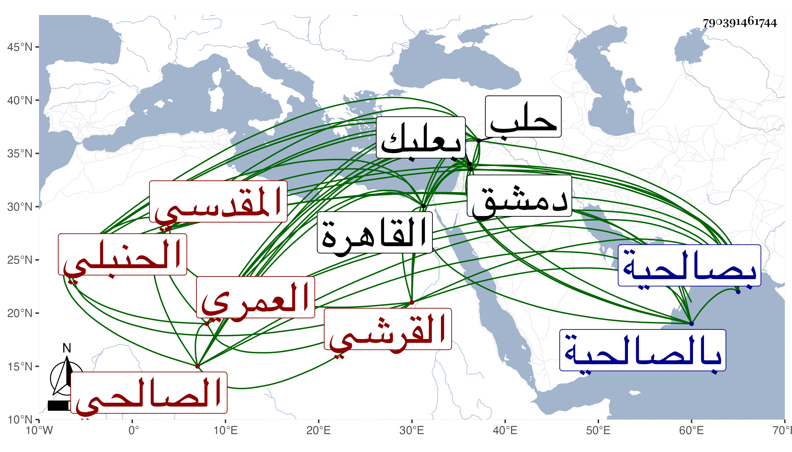

0902Sakhawi.DawLamic.ITO20230111-ara1.EIS1600.790391461744
Biography ID: 790391461744
371
عبد الوهاب بن أبي بكر بن عبد الرحمن بن محمد بن أحمد بن سليمان ابن حمزة بن أحمد بن عمر بن الشيخ أبي عمر بن قدامة التاج أبو بكر بن العماد بن الزين القرشي العمري المقدسي الصالحي الحنبلي أخو المحدث ناصر الدين محمد الآتي ويعرف كسلفه بابن زريق . ولد في رابع رمضان سنة أربع وعشرين وثمانمائة بصالحية دمشق ونشأ بها فقرأ القرآن والخرقي وسمع كثيرا بدمشق وبعلبك وحلب والقاهرة ومن شيوخه ابن ناصر الدين وابن الطحان وابنة ابن الشرائحي وابن بردس والبرهان الحلبي وشيخنا وما أظنه حدث . مات في ربيع الأول سنة خمس وأربعين ودفن بتربة المعتمد بالصالحية .
